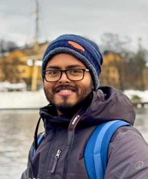

I trace the large-scale magnetic fields hidden inside nearby spiral galaxies — reading their structure from radio polarization data captured by the VLA and Effelsberg telescopes.

AboutI am a Ph.D. candidate at the National Institute of Science Education and Research (NISER), India, working under the supervision of Dr. Tuhin Ghosh. My research focuses on modeling large-scale magnetic fields in nearby spiral galaxies using multi-frequency radio polarization data.
Alongside this, I contribute to the instrumental simulation of the Wide Area Linear Optical Polarimeter (WALOP) for the PASIPHAE survey, and I build PSF-based photometric pipelines for accurate polarization estimation.
44th meeting of the Astronomical Society of India, IIT Guwahati, India
Cosmic Magnetism with Radio Astronomy, Aula Dini, Scuola Normale Superiore, Pisa
6th URSI Regional Conference on Radio Science, GEHU, Uttarakhand, India
41st meeting of the Astronomical Society of India, IIT Indore, India
NISER, Jatni, Odisha
NISER, Jatni, Odisha
Scottish Church College, Kolkata (University of Calcutta)
NISER–DAE Fellowship — Recipient, 2018–Present
Replace this with a line or two about what you play/follow and how often — e.g. weekend football, badminton league, marathon training.
Replace this with a line about your photography — e.g. astrophotography, street, landscape — and link a gallery if you have one (Instagram, Flickr, personal album).